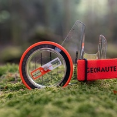

Ориентирование

Ориентирование - это вид спорта, включающий в себя навыки:
- определение сторон света по компасу
- определение своего местоположения по карте
- поиск наиболее короткого пути до контрольного пункта
- умение находить ориентиры на местности и сопостовлять их с ориентирвами на карте
- бег по пересечённой местности
Ориентирование всегда:
- укрепляет здоровье
- улучшает настроение и даёт заряд бодрости
- собирает компанию замечательных людей

График соревнований и тренировок по ориентированию можно посмотреть на сайте:
Федерация спортивного ориентирования